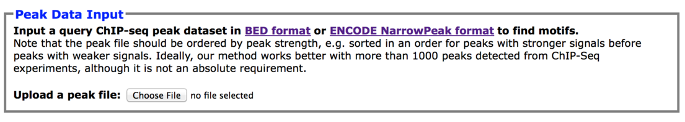
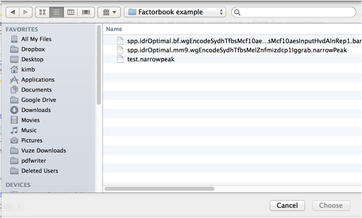
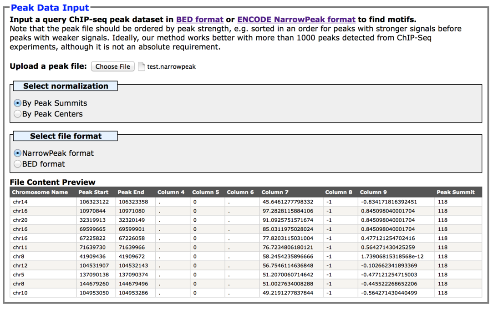
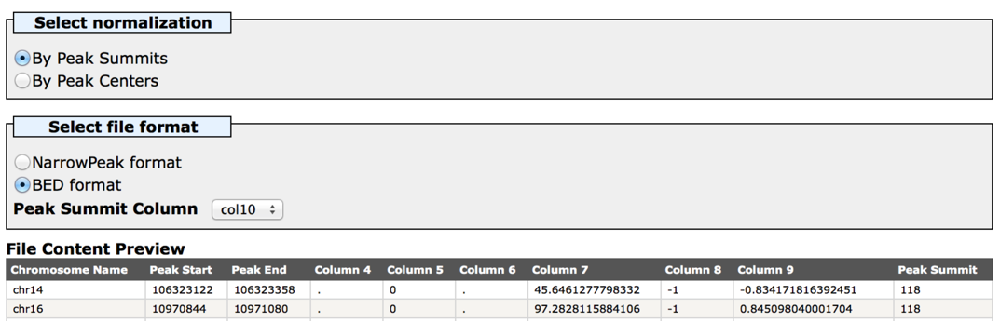
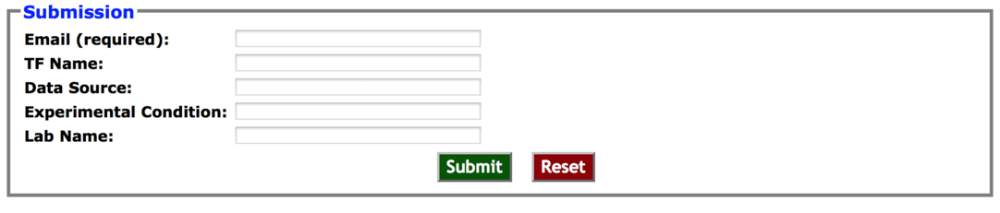
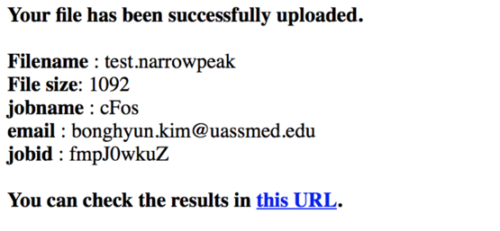
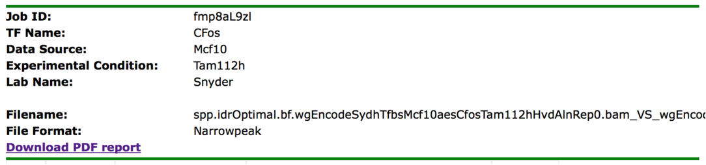
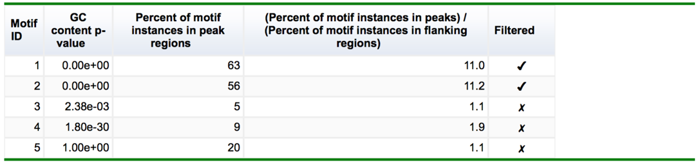
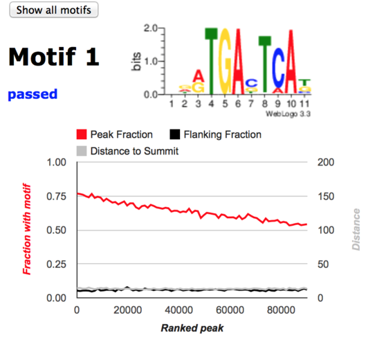
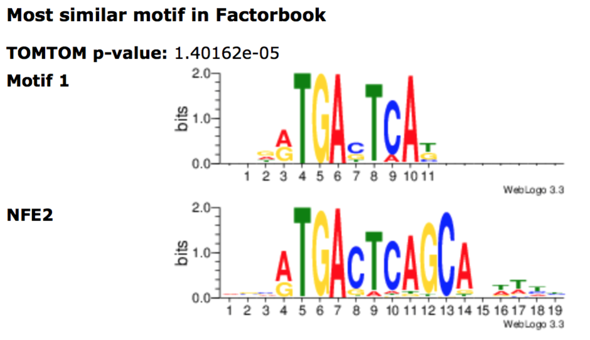

How to use Factorbook Motif
Pipeline
Factorbook
Motif Pipeline discovers de novo motifs for a user input peak file in a BED
format or NarrowPeak
format (modified BED format used in ENCODE Consortium).
1.
Click the upload a peak file
button in the Peak
Data Input box.

2.
Select a peak file in the user’s computer. Note that the input file
should be sorted by the strength of the ChIP-seq signal. Our server assume that
the peak file is sorted and the de-novo motif discovery heavily dependent on
that.

3.
When the file is selected, our server will check the selected file
format and suggest the appropriate choice of peak width normalization (+/- 150
nucleotides around peak summits or center of peaks depending on the normalization
method) and file format.
As a default, NarrowPeak will be normalized
by peak summit (10th column).

Alternatively, for BED format files, you can select peak width normalization
by peak summit or center. Note that you need to select peak summit column if
you want to peak summit normalization.

4.
Select sequence database. Currently our server supports only human
(hg19) or mouse (mm9) sequence databases. If you need other genomes, let us
know your necessities.
5.
Input user email address and optional information then click the submit
button. Optional information is for the user’s own convenience purpose only.
Note that the file upload process might take for a while depending on the internet speed.

6.
After the file is successfully uploaded, the following greeting message
will be displayed. It is important to remember the jobid
for future reference. Upon successful finish of the motif search job, an email
containing the link pointing the result page will be sent.

After
you have a confirmation email from our server, you can check the motif search
result. Alternatively, you can visit this example result URL
by clicking the output example button in the main page of our server.
1.
The results page shows the user input information about the job at the
top.

2.
The summary of found motifs and their statistics follows the job
information. GC content p-value is the significance of the motif comparing
randomly selected 100 regions of the genome with the same GC content as the
peak regions (T1 in the flowchart). We empirically determined the cutoff of T1
as 1.0e-5. Percent of motif instances in peak region represent how often the
de-novo searched motif found by FIMO (T2). We require T2 more than 10%. Percent
of motif instances in flaking regions are calculated same way, except the
flanking regions 300 base pairs +/- 300 base pairs before and after the peak
regions ([-450bp,-150bp] and [150bp,450bp], C2 in the
flowchart). We require T2/C2 to be higher than 1.2 meaning that the peak
regions are at least 20% more enriched with the motif than the flanking
regions. Motifs that pass our criteria will have check marks in the Filtered
column.

3.
By default the result page will display detailed information only for
the motifs passing our criteria. In case you want to see the motifs that
filtered out, click the Show all motifs button.
4.
Detailed motif information start with the motif ID (here Motif 1) and its
sequence logo representation of the position specific weight matrix. The fraction with motif instances in the peak region (red line) and in the
flanking region (black line) are displayed according to the peak ranks.
The average distance to the peak summit from the motif instances are also
displayed. Note that the width are 300bp (or 150bp around the summit), the largest
distance to the summit will be 150bp.

5.
The discovered motifs are compared to the previously known motifs in
factorbook, TransFac and Jasper, by TOMTOM.
